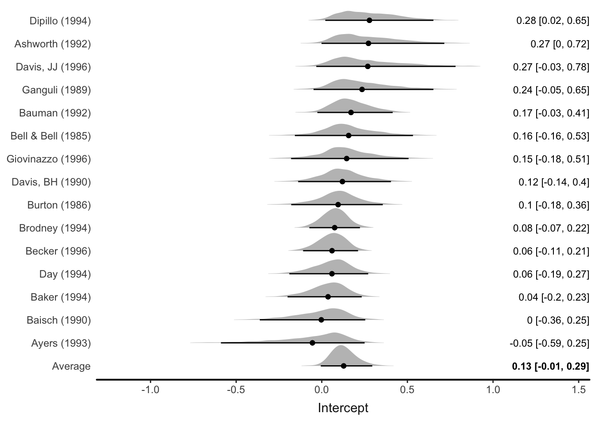
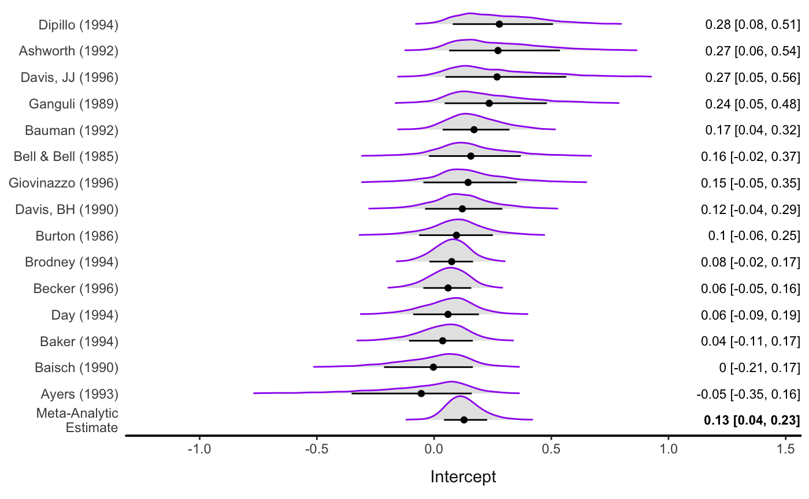
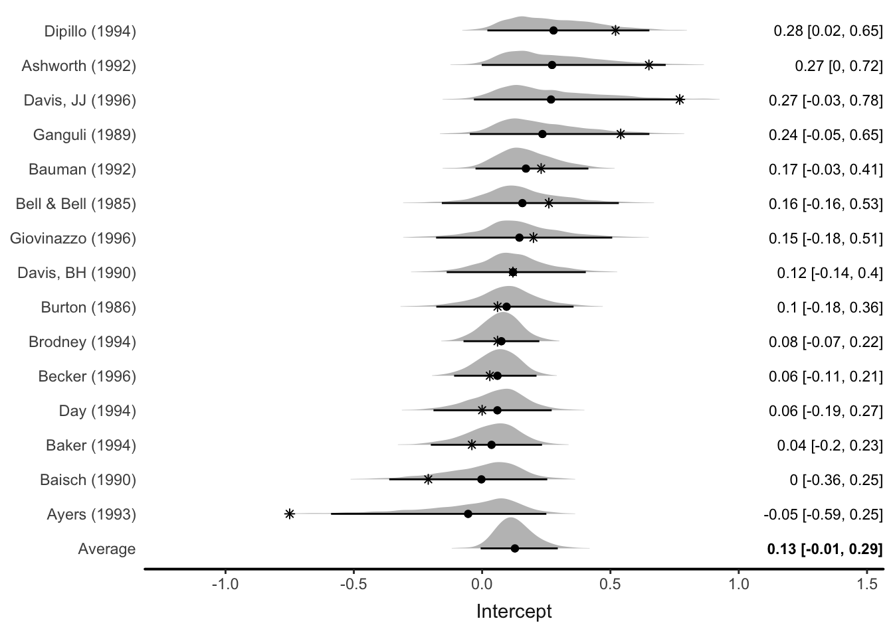
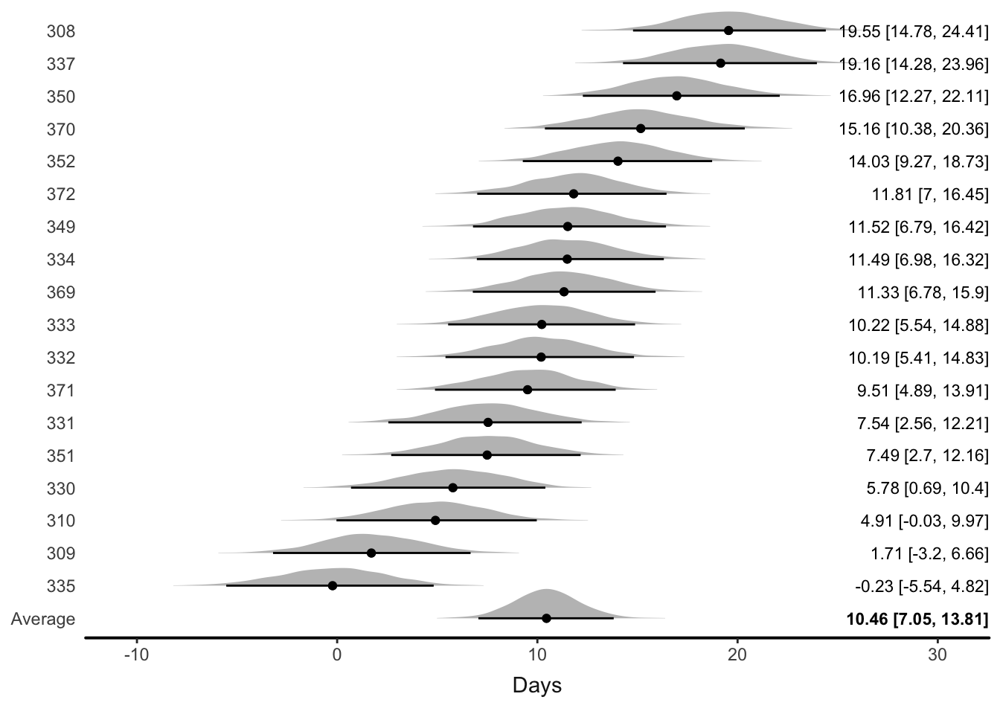
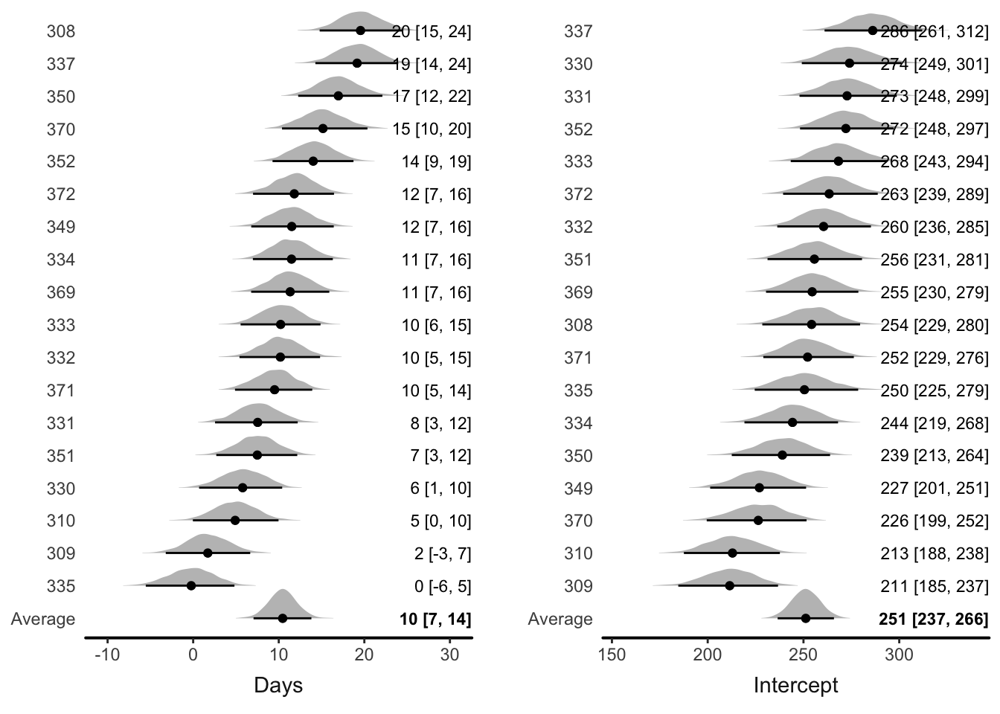
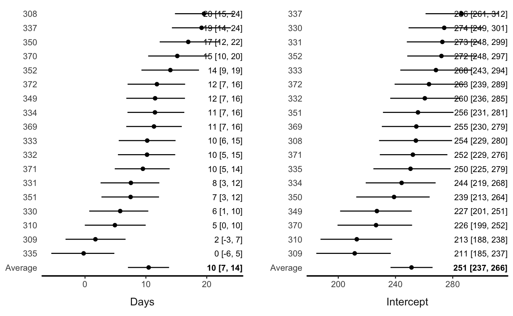

Forest plots display estimated parameters from multiple sources (studies, participants, etc.) in one figure. They are most commonly used in meta-analysis, where individual studies are used to inform an average, or meta-analytic, overall estimate. However, they can be seamlessly applied to other types of multilevel models–models in which parameters are assumed to vary among units. brmstools’ forest() function draws forest plots from brmsfit objects. They should be most useful for meta-analytic models, but can be produced from any brmsfit with one or more varying parameters.
We illustrate using a data set from the metafor package.
data("dat.bangertdrowns2004", package = "metafor")
dat <- dat.bangertdrowns2004 %>%
mutate(study = paste0(author, " (", year, ")"), sei = sqrt(vi)) %>%
select(study, yi, sei) %>%
slice(1:15)brms allows flexible specification of meta-analytic models.
fit_rem <- brm(
yi | se(sei) ~ 1 + (1|study),
data = dat,
cores = 4,
control=list(adapt_delta = .99)
)Use forest() to draw the forest plot:

There are various options (see ?forest)
forest(fit_rem,
level = .80,
av_name = "Meta-Analytic\nEstimate",
col_ridge = "purple",
fill_ridge = "grey90")
#> Picking joint bandwidth of 0.0227
Data points can also be shown (note this probably only makes sense with a meta-analytic model):

The forest() function can be seamlessly applied to any multilevel model.
We use example data from the lme4 package.
data(sleepstudy, package = "lme4")
head(sleepstudy)
#> Reaction Days Subject
#> 1 249.5600 0 308
#> 2 258.7047 1 308
#> 3 250.8006 2 308
#> 4 321.4398 3 308
#> 5 356.8519 4 308
#> 6 414.6901 5 308A multilevel model with varying intercepts and slopes (effect of Days):
If there are multiple varying parameters, users can input a variable name:

Or let the function automatically draw a plot with all the variables:

You can also turn off the ridgeline plots (densities)
